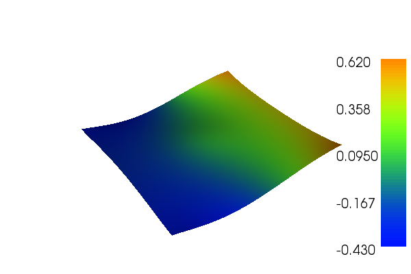

15. Singular Poisson¶
This demo is implemented in a single Python file,
demo_singular-poisson.py, which contains both the variational
forms and the solver.
This demo illustrates how to:
- Solve a linear partial differential equation
- Apply non-zero Neumann boundary conditions
- Define Expressions
- Define a FunctionSpace
- Use the Krylov solver
- Solve singular problems
The solution for \(u\) in this demo will look as follows:
{kind=link}
15.1. Equation and problem definition¶
The Poisson equation is the canonical elliptic partial differential equation. For a domain \(\Omega \in \mathbb{R}^n\) with boundary \(\Gamma = \partial \Omega\), the Poisson equation with pure Neumann boundary conditions reads:
Since only Neumann conditions are applied, \(u\) is only determined up to a constant by the above equations. An addition constraint is thus required, for instance
The most standard variational form of the Poisson equation reads: find \(u \in V\) such that
where \(V\) is a suitable function space and
The expression \(a(u, v)\) is the bilinear form and \(L(v)\) is the linear form.
If we make the Ansatz that \(u\) can be expressed as a linear combination of the basis functions of \(V\), and discretize the equation, we can write our problem as a linear system:
where \(U\) gives the coefficient for the basis functions expressing \(u\).
Since we have pure Neumann boundary conditions, the matrix \(A\) is singular. There exists a non-trival vector \(e\) such that
span \(\{ e \}\) is the null space of A. Consequently, the matrix \(A\) is rank deficient and the right-hand side vector \(b\) may fail to be in the column space of \(A\). We therefore need to remove the components of \(b\) that do not lie in the column space to make the system solvable.
In this demo, we shall consider the following definitions of the input functions, the domain, and the boundaries:
- \(\Omega = [0,1] \times [0,1]\) (a unit square)
- \(\Gamma = \partial \Omega\) (boundary)
- \(g = -\sin(5x)\) (normal derivative)
- \(f = 10\exp(-((x - 0.5)^2 + (y - 0.5)^2) / 0.02)\) (source term)
15.2. Implementation¶
This description goes through the implementation (in
demo_singular-poisson.py) of a solver for the above described
Poisson equation step-by-step.
First, the dolfin module is imported:
from dolfin import *
Then, we check that dolfin is configured with the backend called
PETSc, since it provides us with a wide range of methods used by
KrylovSolver. We set PETSc as
our backend for linear algebra.
# Test for PETSc
if not has_linear_algebra_backend("PETSc"):
info("DOLFIN has not been configured with PETSc. Exiting.")
exit()
parameters["linear_algebra_backend"] = "PETSc"
We begin by defining a mesh of the domain and a finite element
function space \(V\) relative to this mesh. We use a built-in mesh
provided by the class UnitSquareMesh. In order to create a mesh
consisting of \(64 \times 64\) squares with each square divided
into two triangles, we do as follows:
# Create mesh and define function space
mesh = UnitSquareMesh(64, 64)
V = FunctionSpace(mesh, "CG", 1)
Now, we need to specify the trial functions (the unknowns) and the
test functions on the space \(V\). This can be done using a
TrialFunction
and a TestFunction as follows:
u = TrialFunction(V)
v = TestFunction(V)
Further, the source \(f\) and the boundary normal derivative
\(g\) are involved in the variational forms, and hence we must
specify these. Both \(f\) and \(g\) are given by simple
mathematical formulas, and can be easily declared using the
Expression
class. Note that the strings defining f and g use C++ syntax since,
for efficiency, DOLFIN will generate and compile C++ code for these
expressions at run-time.
f = Expression("10*exp(-(pow(x[0] - 0.5, 2) + pow(x[1] - 0.5, 2)) / 0.02)")
g = Expression("-sin(5*x[0])")
With \(u,v,f\) and \(g\), we can write down the bilinear form \(a\) and the linear form \(L\) (using UFL operators).
a = inner(grad(u), grad(v))*dx
L = f*v*dx + g*v*ds
In order to transform our variational problem into a linear system we
need to assemble the coefficient matrix A and the right-side
vector b. We do this using the function assemble:
# Assemble system
A = assemble(a)
b = assemble(L)
We specify a Vector for storing the result by defining a
Function.
# Solution Function
u = Function(V)
Next, we specify the iterative solver we want to use, in this case a
KrylovSolver. The first
argument is the left-hand side matrix, and the second argument
specifies the method used. In this case we use the Generalized Minimum
Residual (GMRES) method.
# Create Krylov solver
solver = KrylovSolver(A, "gmres")
We impose our additional constraint by removing the null space
component from the solution vector. In order to do this we need a
basis for the null space. This is done by creating a vector that spans
the null space, and then defining a basis from it. The basis is then
attached to the KrylovSolver
as its null space.
# Create vector that spans the null space
null_vec = Vector(u.vector())
V.dofmap().set(null_vec, 1.0)
null_vec *= 1.0/null_vec.norm("l2")
# Create null space basis object and attach to Krylov solver
null_space = VectorSpaceBasis([null_vec])
solver.set_nullspace(null_space)
Orthogonalization of b with respect to the null space makes sure
that it doesn’t contain any component in the null space.
null_space.orthogonalize(b);
Finally we are able to solve our linear system
solver.solve(u.vector(), b)
and plot the solution
plot(u, interactive=True)
15.3. Complete code¶
from dolfin import *
# Test for PETSc
if not has_linear_algebra_backend("PETSc"):
info("DOLFIN has not been configured with TPETSc. Exiting.")
exit()
parameters["linear_algebra_backend"] = "PETSc"
# Create mesh and define function space
mesh = UnitSquareMesh(64, 64)
V = FunctionSpace(mesh, "CG", 1)
# Define variational problem
u = TrialFunction(V)
v = TestFunction(V)
f = Expression("10*exp(-(pow(x[0] - 0.5, 2) + pow(x[1] - 0.5, 2)) / 0.02)")
g = Expression("-sin(5*x[0])")
a = inner(grad(u), grad(v))*dx
L = f*v*dx + g*v*ds
# Assemble system
A = assemble(a)
b = assemble(L)
# Solution Function
u = Function(V)
# Create Krylov solver
solver = KrylovSolver(A, "gmres")
# Create vector that spans the null space and normalize
null_vec = Vector(u.vector())
V.dofmap().set(null_vec, 1.0)
null_vec *= 1.0/null_vec.norm("l2")
# Create null space basis object and attach to Krylov solver
null_space = VectorSpaceBasis([null_vec])
as_backend_type(A).set_nullspace(null_space)
# Orthogonalize RHS b with respect to the null space (this gurantees a
# solution exists)
null_space.orthogonalize(b);
# Solve
solver.solve(u.vector(), b)
# Plot solution
plot(u, interactive=True)